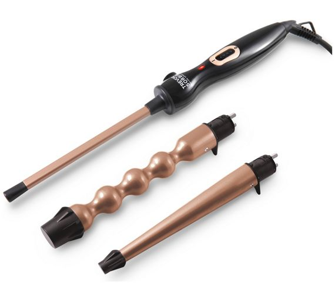
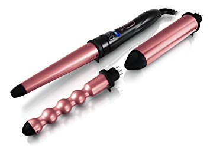
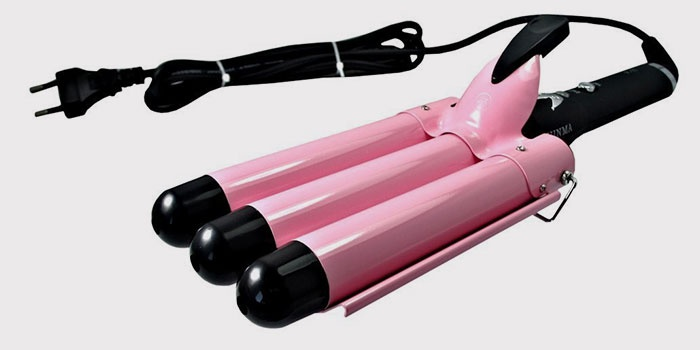
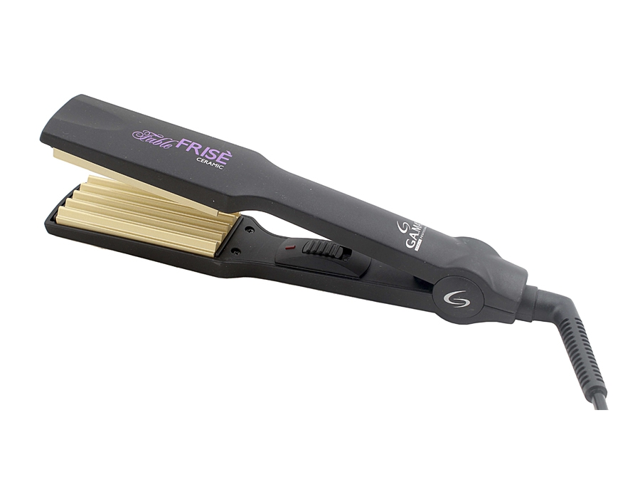

* Колір або відтінок виробу на фотографії може відрізнятися від реального.
Характеристики та комплектація товару можуть змінюватися виробником без сповіщення.
Магазин не несе відповідальності за зміни, внесені виробником.
Плойка Saturn ST-HC736
Ціна:259 грн
Код: 1116344
Загальні характеристики
Тип: Плойка
Ширина/діаметр щипців: 19 мм
Покриття пластин / насадок: Кераміка
Споживана потужність: 35 Вт
Температура нагріву: 190 °С
Подібні товари
Плойка SORBIE Multi-Wand Magnetic Loop Iron
3 пристрої в 1 для вигину і розмаху: конічний наконечник (32-19 мм), циліндричний наконечник (38 мм) і наконечник міхура (26-17 мм).Змінна температура від 160 ° C до 200 ° C за допомогою цифрового екрана.Керамічні циліндри, наповнені кератином і аргановою олією. Магнітна система для кріплення та від'єднання наконечниківПлойка Diva Feel The Heat (pink)
 Профессиональная конусная плойка для волос имеет уникальное керамическое покрытие с элементами аргана.Насадки фиксируются в с помощью прочных магнитов с содержанием неодимиума. Этот элемент обеспечивает надежное крепление деталей. Плойка поддерживает несколько режимов нагрева с использованием LED-экрана. Диапазон доступных температур — от 158 до 210 градусов выше нуля. Нагрев происходит в считанные секунды до заданной температуры.Тройная плойка для волос
 Тройная плойка для волос – инновационное приспособление для укладки с тремя рабочими поверхностями. Инструмент прекрасно решает задачу по созданию волнистого эффекта и легкой завивки, придает укладке дополнительный объем и жизнестойкость. При помощи этого приспособления можно делать разные ежедневные и вечерние прически с экстравагантными локонами на длинных и коротких волосах. Плойка моментально нагревается и стабильно держит температуру, оберегая локоны от повреждения.Плойка для завивки GA.MA P21.FRISE
Щипцы-гофре GA.MA P21.FRISE превосходно придают форму волосам от корней до кончиков волос и за несколько минут создадут Ваш неповторимый динамичный и модный стиль. Благодаря использованию технологии QHT устройство нагревается буквально за несколько секунд. Технологии Ceramic Ion и Nano Silver обеспечивают защиту волос и делают их гладкими и блестящими. Термостойкий корпус Thermal Plus позволяет избежать ожогов кожи рук и головы.Размер рабочей поверхности: 9 x 4 см.Плойка BABYLISS C260E
 У плойки «Easy wave»
3 температурных режима, что подходит обладательницам волос любого типа и структуры. В комплекте
также есть термостойкий коврик, чтобы обезопасить от нагревания поверхность при работе с плойкой.
Покрытие Titanium Ceramic – это профессиональное покрытие, которое защищает Ваши волосы от повреждения
и сильного воздействия высоких температур на структуру волос. У Вас получится очень быстрая и естественная укладка!
У плойки «Easy wave»
3 температурных режима, что подходит обладательницам волос любого типа и структуры. В комплекте
также есть термостойкий коврик, чтобы обезопасить от нагревания поверхность при работе с плойкой.
Покрытие Titanium Ceramic – это профессиональное покрытие, которое защищает Ваши волосы от повреждения
и сильного воздействия высоких температур на структуру волос. У Вас получится очень быстрая и естественная укладка!